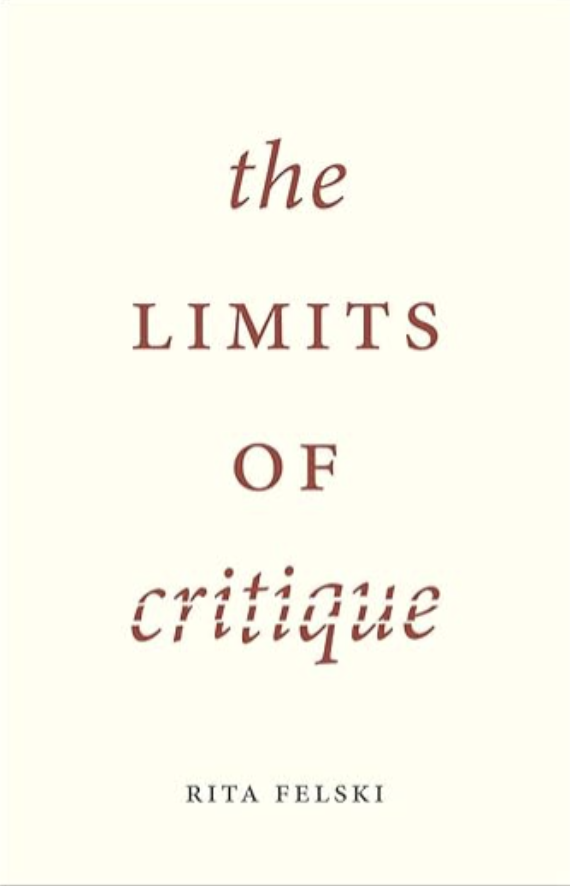
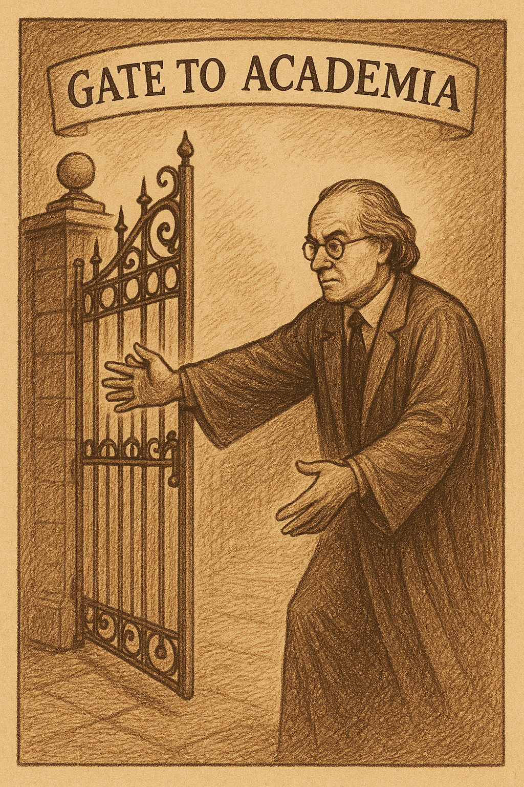
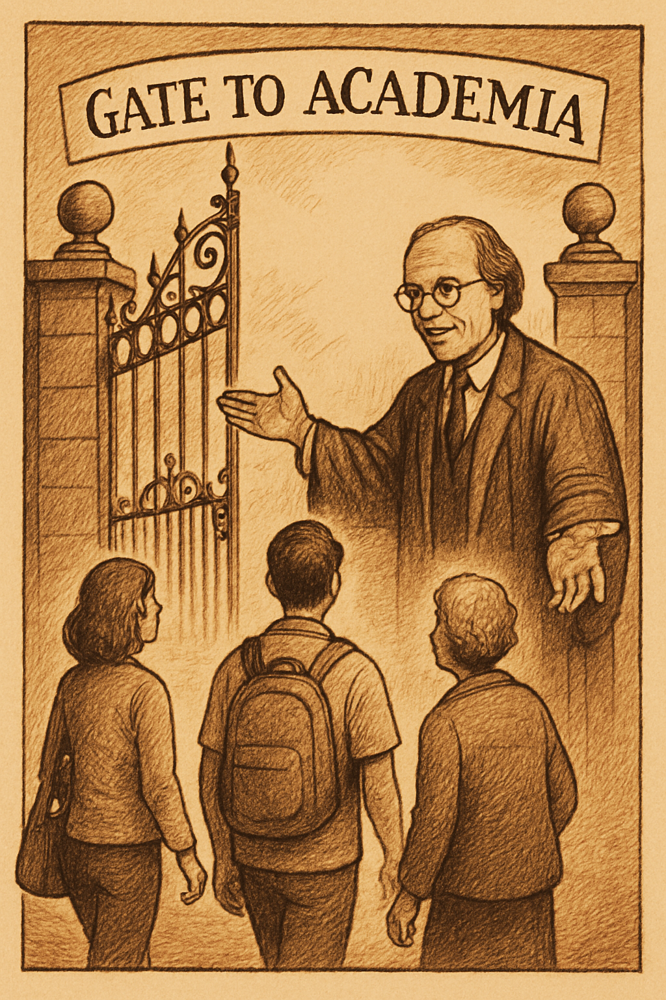

| Bolashak – Week 8 |

Critique, Criticism, Criticality| Typical -> We have spent most of the time talking about these sections. |
| Now we will talk a bit about these sections – and
how to defend your research against
criticism. |
| Introduction: Asks a research question Can say why the research question responds to a problem Often opens up a wide and complete space of research Analysis / Discussion / Conclusion: Answers the research question Can say why the answer forms part of a solution Can say why the answer is narrow and partial: includes contribution to the literature but also limitations and further work |

“My research is novel, vital and rigorous.” (Out of my way! I belong to Academia!)| (Now that I’m here…) “But there’s so much work for others still to do.” |
 |
| In other words, use these sections
strategically: Reflect on questions of: Validity (put simply: are your results true / robust) Reliability (can your results be generalized - and how?) IF “My sample is 10 Year 8 students at a high school in Almaty” THEN Can my results be extended to all: **“Year 8 students at the same high school in Almaty” “Students (at any level) at the same high school in Almaty” “Year 8 students at any high school in Almaty” “Year 8 students at any high school” (in Kazakhstan / the world) Etc etc Discuss limitations and scope for further work Consider practical implications and the meaning** of the research Remind the reader / review of the contribution of the article to the literature - what gap it fills and why this matters Preempt, integrate and respond to criticism explicitly: “while this research does not address all concerns about AI in the classroom, it does…” |
| Empirical: Marsden, L., Munn, L., Magee, L., Ferrinda, M., St. Pierre, J., & Third, A. (2024). Inclusive online learning in Australia: Barriers and enablers. Education and Information Technologies, 1-30. |
Theoretical / Conceptual: Munn, L., Magee, L., & Arora, V. (2024). Truth machines: synthesizing veracity in AI language models. AI & society, 39(6), 2759-2773. |
| Before Submission: Self review (print / highlight / red pen) Peer review AI review: “Review this paper as Reviewer 2…”; “Be more Reviewer 2” “Be even more Reviewer 2” Iterate through drafts Double-check citations, images, grammar etc |
| After Review: Accepted: All good! Minor Revisions: Do the Revisions Major Revisions: Do the Revisions Revise and Resubmit: Do the Revisions Rejected: Revise / Consider / Resubmit Revise Carefully: Format All Reviewer Responses in a table Update the text Write a cover letter to the editor – thanking the reviewers (even when you don’t want to!) No need to agree to every comment - but respond and justify response Balanced tone – appreciative not sycophantic | Reviewer # | Comment | Response | | 1 | Add references X, Y, Z | Thank you for this comment. We added references X, Y, Z | |
| Pick a journal (last week’s lecture) Wait (3-12 months!)… and Prepare for Criticism… What are the main areas of criticism? Not answering (and sometimes not mentioning!) the research question Not addressing all the literature (especially recent literature) Not choosing theories and methods appropriate to the research question Not mentioning, explaining and justifying limitations Not considering issues of validity (is it true?) and reliability (can it be reproduced?) Being too dogmatic – not calibrating for alternative views, criticisms, scepticism General quality issues (grammar, organization, referencing, image quality etc) |
| Review Colleagues’ Work Do Peer Review for Good Journals Join Editorial Boards Get Experience with Diverse Articles and Distinctions: Qual / Quant / Mixed Methods Empirical / Theoretical / Historical Articles vs Book / Book Chapters vs Essays vs Reviews Disciplinary Differences (Humanities vs Social Sciences vs Sciences) |